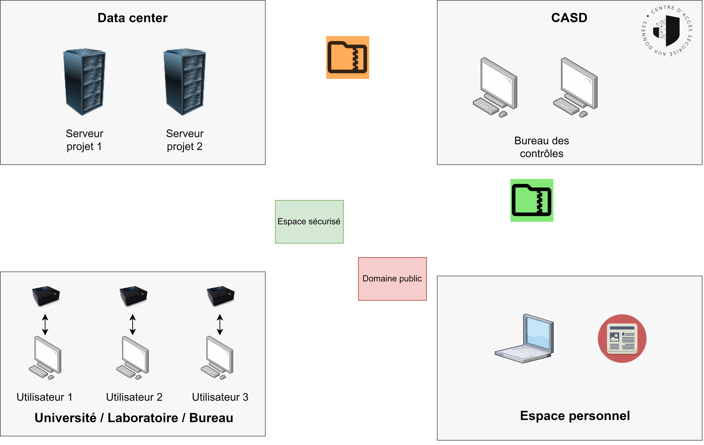
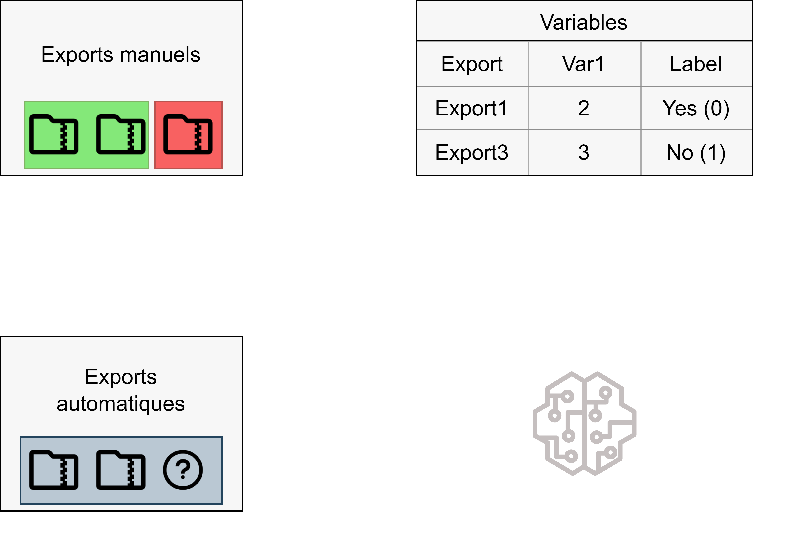
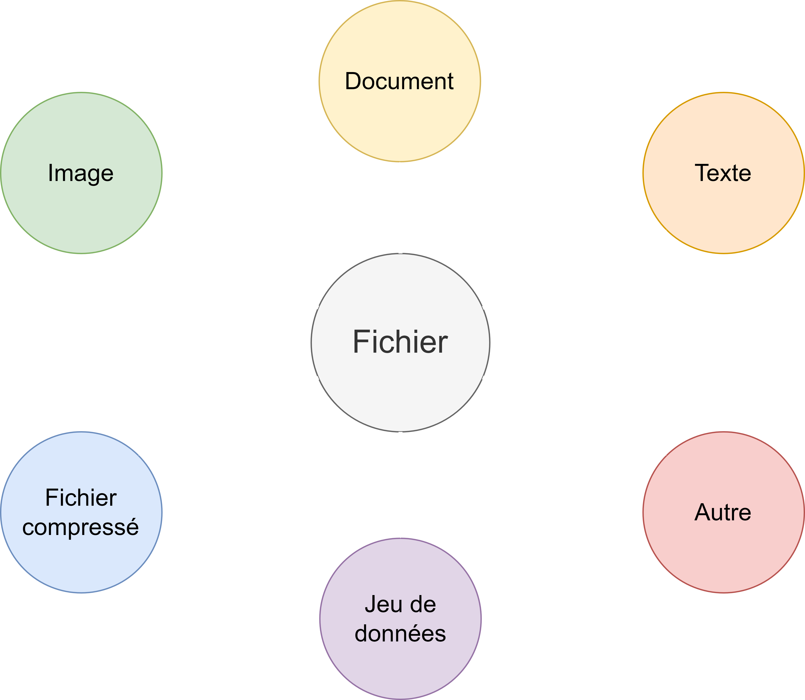
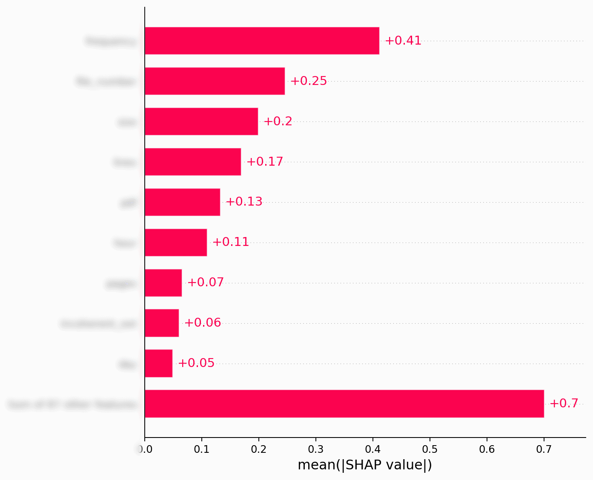
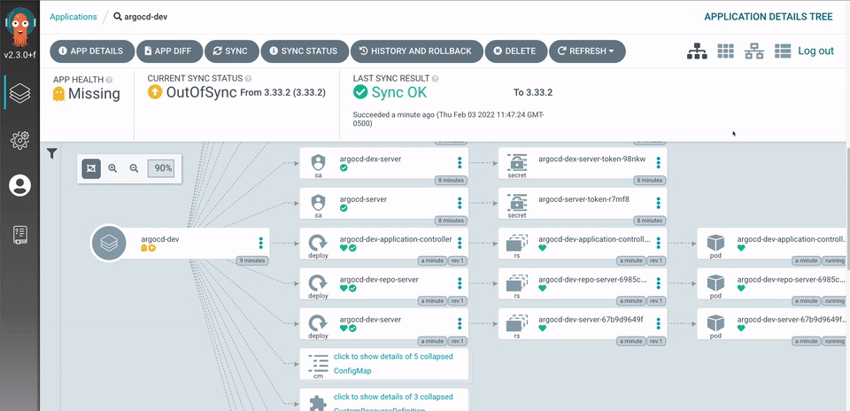
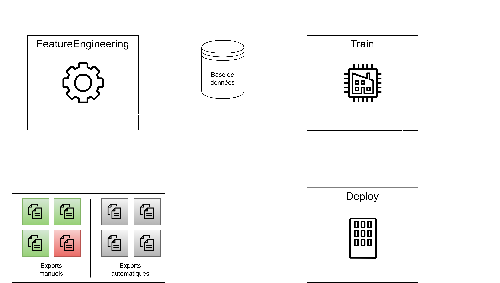
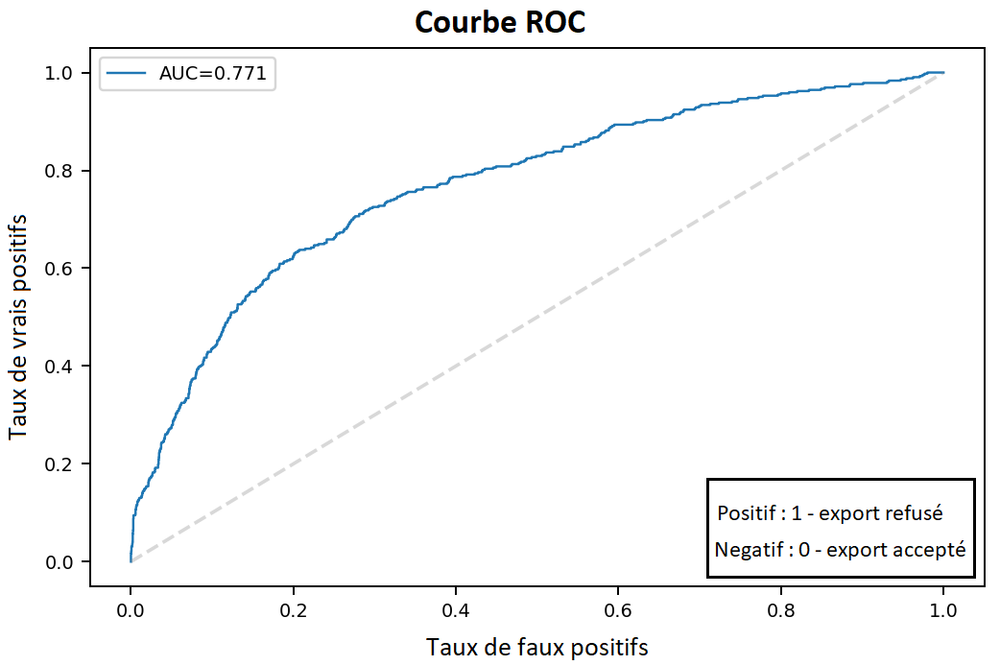
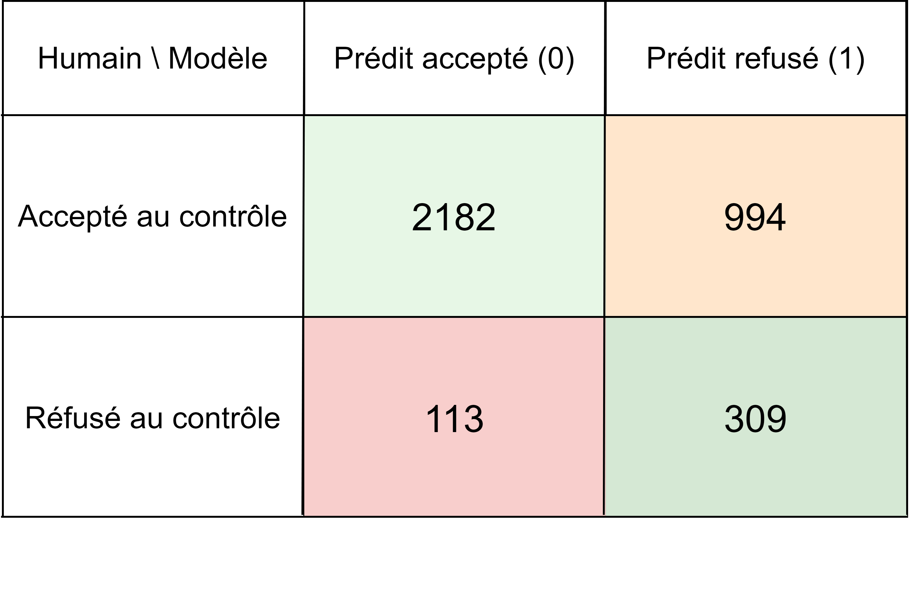
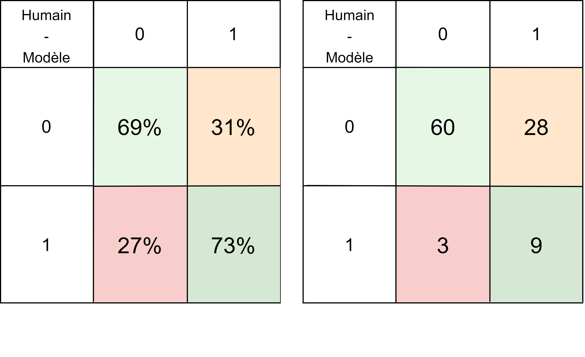

Un modèle d'apprentissage au service de la détection des fuites de données
Titouan Rigaud
Contexte
Bienvenue dans le contrôle d'exports
Quel est le problème ?
Ce qu'il faut réaliser :
Les difficultés principales
- Difficile d'entrainer un modèle sur ces données
- Grande variété de fichiers
- Comparer les modèles
- Déployer un modèle facilement et rapidement
Problème du type de données et de leur variété
Transformer un zip contenant des fichiers en série de variables
Une application dédiée
- Du code objet python - des librairies pour ouvrir les fichiers
- Une API contactable par HTTP
- Une base de données des variables
Gestion des formats
Problème de la comparaison rapide des modèles
Comparer les variables / les algorithmes / les hyperparamètres
Outil de suivi des modèles

Comparaison des modèles (Hyperparamètres / Algorithmes)

Outil de comparaison des variables
Un outil d'orchestration des tâches

Problème du déploiement rapide
Un outil de déploiement continu
Une solution générale au problème
Architecture de la solution
Quels résultats ?
Performance du modèle
Performance du système


Futures perspectives
- Lutter contre la dérive des modèles
- Améliorer les perforances en entrainant un modèle fichier par fichier
A propos du modèle
XGboost en schéma
Les raisons de sa popularité
- Parralélisation partielle
- Régularisation contre le sur-apprentissage
- Gestion des données manquantes
- Validation croisée
- Vitesse d'entrainement
La raison de sa popularité
- Un niveau de performance inégalé sur tout type de données tabulaires
A propos de la méthodologie
Methodologie de l'apprentissage
A propos de la validation de données
y-data profiling